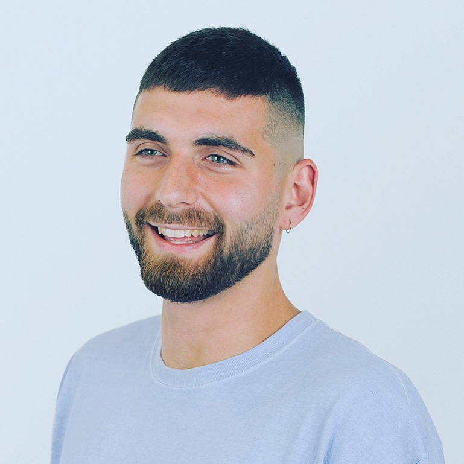

about.
Hey, my name is Rane and I'm a software engineer based in London with over 8 years experience in the industry. I started my journey by doing a 12 week web development immersive course at General Assembly, a course I later went on to teach. Now, I am a consultant at Red Badger where I have worked with company's such as Fortnum & Mason, Nando's and Levi's to deliver new innovative digital products using a variety of languages, frameworks and processes. Check out my CV for more details!
